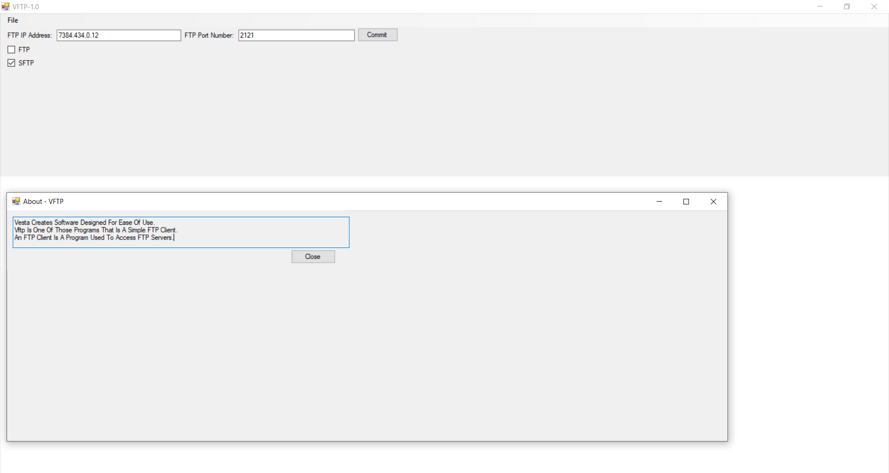
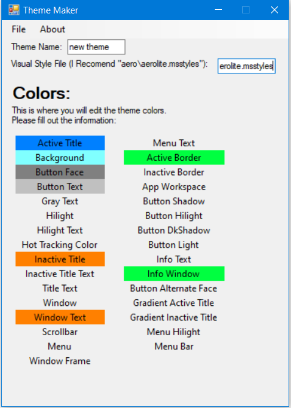
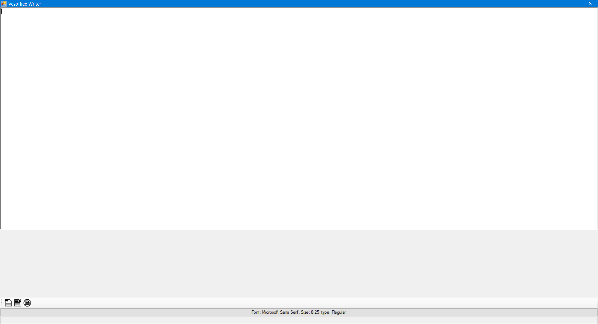

We Wish To Make Your Struggles With Computors Go Away With Simple To Use Programs That Are Completely Free As We Are Not A Full Company Yet.
Vftp:
An Easy To Use Ftp And Sftp Client For Windows.

Download: Vftp Ftp Client.zip
Windows 10 Theme Maker:
A Simple Theme Maker For Windows 10.

Download: Windows 10 Theme Maker.zip
Writer Appliction:
A Simple Writer Appliction For Windows 10.

Download: Vesta Office Writer.zip